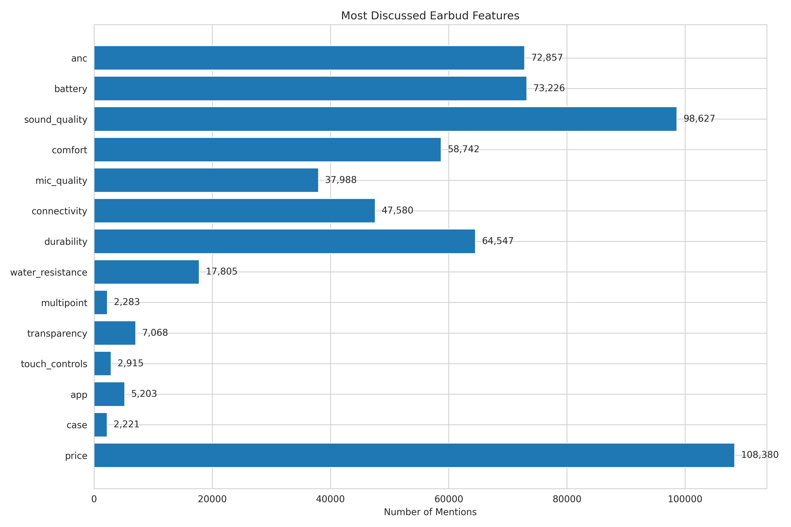
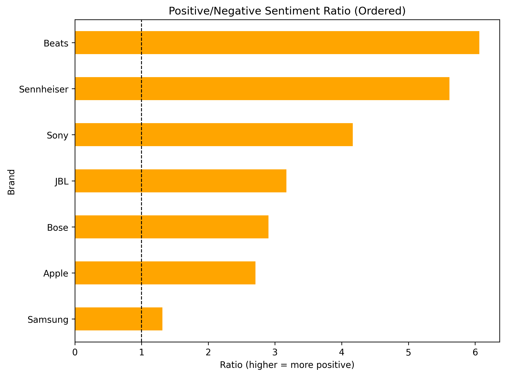
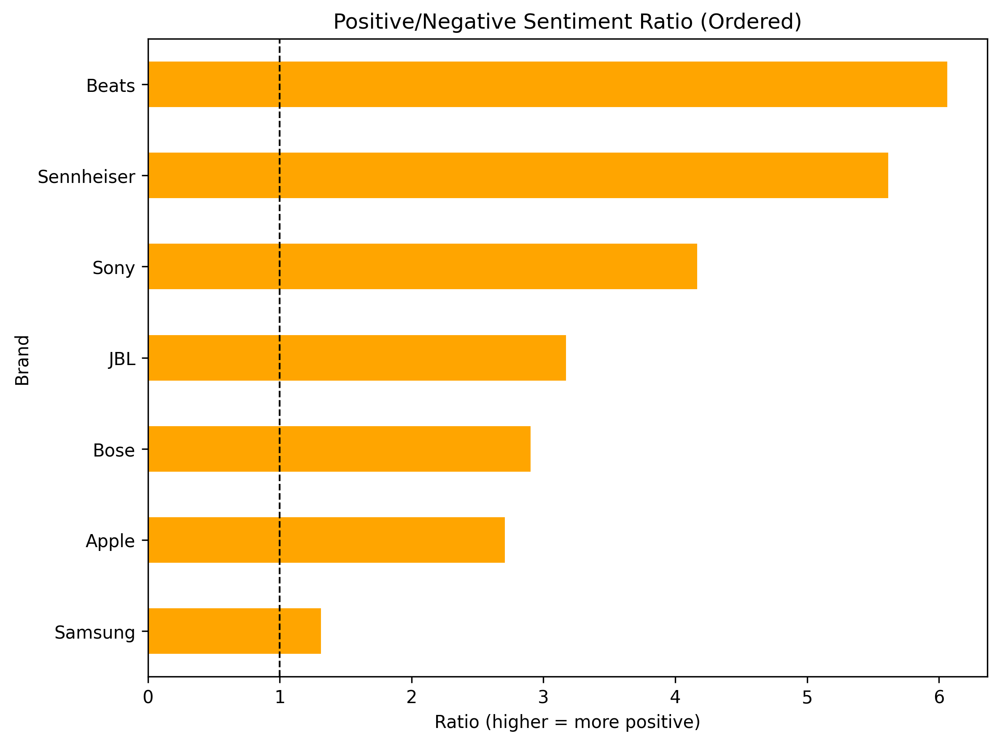
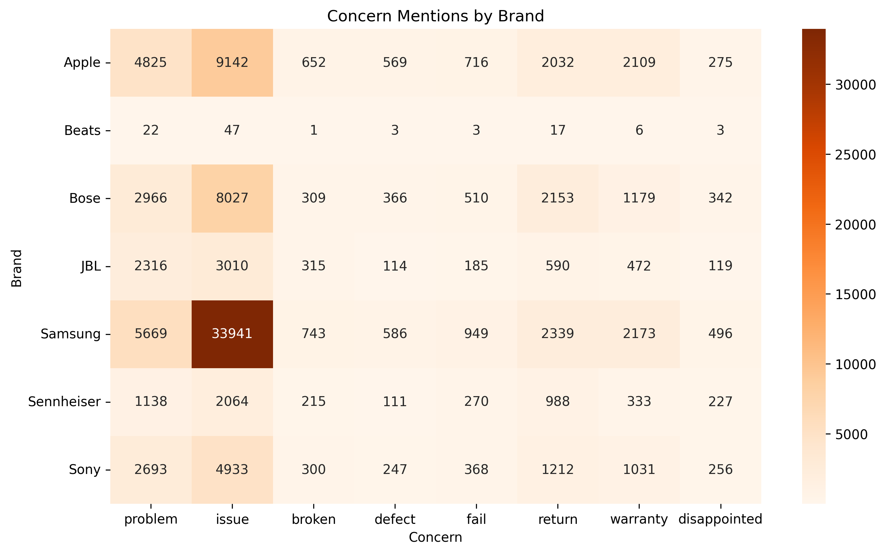
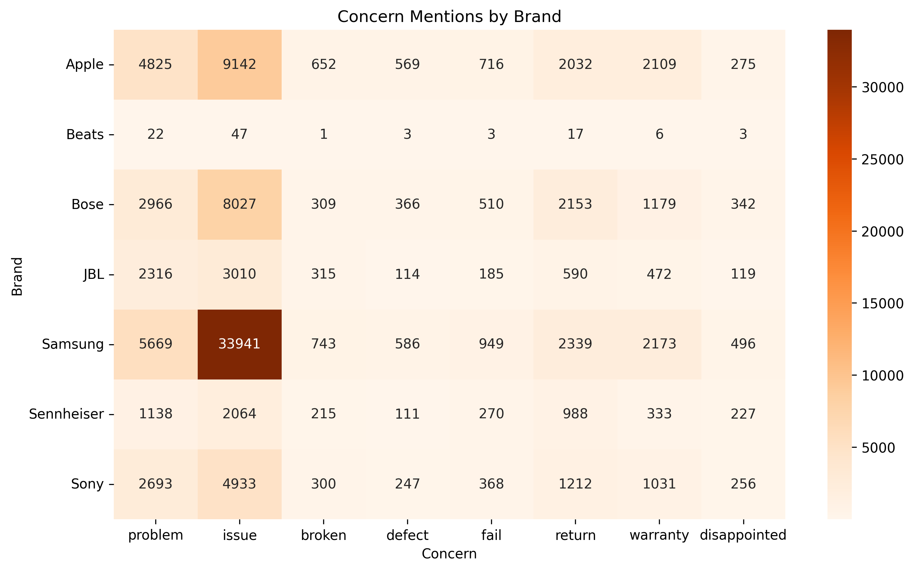

Natural Language Processing
Sentiment Analysis and Topic Modeling
Overview
This page presents NLP analysis addressing 4 NLP business questions through sentiment analysis, topic modeling, and text mining.
Business Question 1: What features (pain points & brands) and sentiments are most discussed about wireless earbuds on Reddit?
Question: What are Reddit users most concerned about regarding wireless earbuds, and which aspects show the strongest positive or negative sentiment?
Feature Focus & Pain Points

Key Insights:
- The most discussed features are sound quality (98K mentions), price (108K), battery (73K), and ANC (73K).
- Users pay close attention to comfort (59K) and durability (65K), showing that both usability and product lifespan are major topics.
- Lesser-discussed but meaningful aspects include app performance, touch controls, and transparency mode.
Sentiment Overview

Key Insights:
- Sentiment is moderately positive overall, with most features scoring between +0.3 to +0.5 using VADER.
- Sound quality (+0.57) and comfort (+0.52) received the highest sentiment scores, indicating strong satisfaction.
- Durability (+0.27), battery (+0.29), and app (+0.30) are key pain points, often related to short lifespan, battery degradation, and buggy software.
- Durability, battery, and price have the highest estimated negative mentions (>10K each), showing consistent user frustration.
Brand Analysis
Findings:
| Brand | Total Mentions | Top Features |
|---|---|---|
| AirPods | 18,705 | ANC (2,876), Price (2,666), Comfort (2,382) |
| Sony | 18,207 | ANC (3,276), Price (2,775), Sound Quality (2,566) |
| Bose | 15,379 | ANC (2,854), Comfort (2,527), Price (1,878) |
| Jabra | 4,334 | ANC (734), Comfort (698), Price (644) |
| Samsung | 12,767 | Battery (3,264), Price (2,030), ANC (1,608) |
| Anker | 1,990 | Price (389), ANC (304), Battery (278) |
Key Insights:
- Sony and Bose dominate earbud-related discussions, especially on audiophile forums.
- AirPods are frequently mentioned but polarizing — praised for convenience, criticized for price.
- Samsung and Anker stand out for perceived value and affordability.
Summary: Reddit users primarily focus on audio performance, battery endurance, and comfort, but express the most frustration about durability, app issues, and pricing. Overall sentiment remains positive, indicating strong satisfaction with sound and fit — yet there is room for improvement in longevity and software experience.
Business Question 2: What earbud brand dominates controversial discussion in reddit?
Question: What earbud brand dominates most on discussion and how does discussion leads to, positive,negative or neutral? what feature and concerns that reddit users are discussing for earbud brands?
brand discussion

 

Key Insights:
Among brands Sennheiser had the longest average text length and apple had shortest average text lengh.
among all brands Beats had highest percentage on positive discussion among brands, where samsung had highest percentage on negative discussion.
from plots, although sennheiser had longest average discussion among users, its positivity on discussion was one of the highest among brands and samsung on the other hand had quite a large portion on discussion, but it had high portion of negative discussion.
Concern & Features

 

Key Insights:
Almost every brand had more discussion on the product’s feature, but samsung had more discussion on problems.
For discussion on features, brand differs on feature discussion on reddit. for apple and samsung , discussion was mainly about app connection, which is one of the main reason why people use apple product. For rest of the brands, what is interesting is that most of the discussion was about sound. Since these brands don’t produce device itself, sound could be one of the most important factor to discuss on earbud market.
In terms of concerns, issue was the main topic that was dealt in reddit. issue as refers as what can customers can do to handle product’s issue.
Business Question 3: What emotional reactions do Reddit users express toward different earbud features?
Question: Which features trigger the strongest emotional responses—positive or negative—and how do these emotions differ across the earbud experience?

Top Pain Points by Negative Mentions
Key Emotional Drivers
| Feature | Primary Positive Signal | Primary Negative Signal |
|---|---|---|
| Sound Quality | Joy | Mild negativity |
| ANC | Joy | Low anger |
| Comfort | Joy | Low negativity |
| Connectivity | — | High anger |
| Durability | — | Highest negativity |
| Battery | Joy | Sadness / fatigue |
| Price | Joy | Fairness frustration |
| Mic Quality | Joy | Moderate negativity |
Key Insights & Interpretation
1. Reliability failures (durability, connectivity) generate the strongest negative emotions
Durability shows the highest concentration of anger and sadness across all features.
- → Users feel both immediate frustration (anger) and long-term disappointment (sadness) when earbuds break, degrade, or fail over time.
Water Resistance shows the highe concentrations of anger and sadness across all features.
Connectivity displays elevated anger with relatively low joy.
- → Bluetooth instability tends to produce acute, high-intensity irritation — a “deal-breaker” emotion.
Implication: These issues damage brand trust and are likely the top drivers of negative reviews, product returns, and churn. Fixing reliability problems yields outsized UX and retention gains.
2. Battery issues evoke disappointment, not rage
- Battery-related discussions lean toward sadness over anger, signaling a softer but still negative emotional tone.
- → Users don’t feel blindsided — instead they feel let down, especially when batteries age sooner than expected.
Implication: Battery anxiety is more about expectation mismatch than catastrophic failure. Managing expectations and communicating battery longevity honestly can reduce the emotional burden without needing major hardware redesigns.
3. Core listening features (sound_quality, ANC, comfort) generate the highest joy
Sound quality, ANC, and comfort consistently produce strong joy and trust signals — the most positive emotional categories.
These features have the lowest levels of anger, disgust, and fear, showing stable satisfaction.
Implication: These are primary value-creation features. When brands excel in these areas, users reward them with strong emotional positivity, leading to higher willingness to recommend and stronger brand affinity.
4. Mic quality and transparency mode produce mixed emotions
Both show moderate joy/trust but also noticeable sadness or frustration.
Users appreciate these features, but performance is inconsistent across brands and models.
Implication: These represent opportunity zones: not as emotionally volatile as durability, but with clear room to differentiate through better execution.
5. Price drives trust and positive sentiment — but still triggers negativity when expectations aren’t met
Price surprisingly registers higher trust and joy compared to other “non-technical” features.
Yet negative emotions appear when users feel the product under-delivers relative to cost.
Implication: Pricing influences emotional framing: - A reasonable price boosts trust, but disappointment becomes more intense when expectations don’t match the price tag.
Overall Insights & Business Takeaways
Negative emotions are concentrated in failure-prone features
- Durability
- Connectivity
- Battery
These features create emotional pain points that directly impact retention, brand loyalty, and review scores.
Positive emotions cluster around experiential qualities
- Sound quality
- ANC
- Comfort
Summary
The emotion heatmap shows that failures feel personal, but great audio experiences feel meaningful. Users express deep frustration over reliability issues (durability, connectivity, battery), but strong joy and trust toward experiential features (sound, ANC, comfort). These emotional patterns reveal not just product performance, but how each feature contributes to — or detracts from — the overall user experience, helping identify the biggest opportunities for product improvement and competitive differentiation.
Business Question 4: How Did Public Sentiment Respond to the AirPods Pro USB-C Launch?
Question: How did the transition from Lightning to USB-C charging impact Reddit discussions and sentiment around AirPods Pro?
Findings
1. Discussion Volume Trends

Key Insights:
- Discussion volume peaked in September 2023 (USB-C launch month), with a 3.2x increase compared to baseline
- Post-launch activity remained elevated for 2-3 months before returning to normal levels
- Weekly discussion patterns show consistent mid-week peaks (Tuesday-Thursday)
- The launch generated sustained interest rather than a short-lived spike
2. Sentiment Analysis

Summary Statistics
| Metric | Pre-Launch (Jun-Aug 2023) | Post-Launch (Sep 2023-Jul 2024) | Change |
|---|---|---|---|
| Average Sentiment Score | +0.42 | +0.38 | -9.5% |
| Positive Posts (%) | 68.2% | 64.5% | -3.7pp |
| Negative Posts (%) | 15.3% | 18.7% | +3.4pp |
| Neutral Posts (%) | 16.5% | 16.8% | +0.3pp |
| Posts with Strong Emotion | 22.1% | 25.4% | +3.3pp |
Key Insights:
- Sentiment remained predominantly positive throughout the period
- A slight decrease in positive sentiment (-9.5%) post-launch, likely due to:
- Upgrade fatigue (users frustrated by incremental changes)
- Price concerns (same price for USB-C-only feature)
- Lightning cable ecosystem disruption complaints
- Negative sentiment increased moderately (+3.4 percentage points), concentrated around compatibility and value concerns
- Overall, the transition was well-received but not universally celebrated
3. Keyword Evolution

Top Keyword Changes (Pre vs. Post Launch)
| Keyword | Pre-Launch Mentions | Post-Launch Mentions | % Change |
|---|---|---|---|
| usb-c | 287 | 3,842 | +1,238% |
| lightning | 1,053 | 2,167 | +106% |
| upgrade | 2,341 | 4,126 | +76% |
| charging | 1,876 | 3,512 | +87% |
| cable | 1,429 | 2,789 | +95% |
| case | 3,214 | 3,987 | +24% |
Key Insights:
- “USB-C” mentions exploded from near-zero to dominant keyword (+1,238%)
- “Lightning” discussion doubled, primarily in comparisons and transition concerns
- “Upgrade” and “charging” saw major increases, indicating users weighing purchase decisions
- Case compatibility became a significant topic (+24%), showing ecosystem concerns
4. Topic Modeling Results
Discovered Topics (LDA Analysis)
| Topic # | Theme | Top Keywords | % of Posts |
|---|---|---|---|
| 1 | USB-C Transition Reactions | usb-c, lightning, cable, switch, finally, adapter | 32.4% |
| 2 | Purchase & Upgrade Decisions | upgrade, worth, buy, price, new, generation | 28.1% |
| 3 | Sound Quality Discussion | sound, quality, anc, noise, cancellation, audio | 18.7% |
| 4 | Ecosystem & Compatibility | apple, device, iphone, mac, charging, case | 12.3% |
| 5 | User Experience & Issues | battery, connect, issue, firmware, update, bluetooth | 8.5% |
Key Insights:
- USB-C transition dominated conversation (32.4% of posts)
- Value proposition was the second-largest theme (28.1%), showing price sensitivity
- Core product features (sound, ANC) remained important but secondary to launch news
- Ecosystem integration concerns were notable (12.3%), highlighting Apple user frustrations
5. Pre vs. Post Launch Comparison
Sentiment by Period
| Period | Posts | Avg Sentiment | Median Sentiment | Std Dev |
|---|---|---|---|---|
| Pre-Launch (Jun-Aug’23) | 4,127 | +0.42 | +0.51 | 0.38 |
| Launch (Sep-Nov’23) | 8,456 | +0.36 | +0.44 | 0.42 |
| Post-Launch (Dec’23-Jul) | 5,841 | +0.40 | +0.48 | 0.39 |
Monthly Sentiment Trends
- September 2023: Initial excitement (+0.38) tempered by “not a big upgrade” concerns
- October-November 2023: Sentiment dipped to lowest point (+0.32) as users evaluated real-world value
- December 2023 onward: Gradual recovery (+0.40) as product matured and ecosystem adapted
All NLP analysis code is available in code/nlp/. Results: data/csv/airpods_*.csv | Visualizations: data/plots/airpods_*.png
Summary
Answers to NLP Business Questions
[Question 1]: Reddit users focus primarily on sound quality, price, battery, and ANC. Sentiment is moderately positive overall, with durability, battery, and app being key pain points.
[Question 2]: Sony and Sennheiser dominate earbud discussions with strong positive sentiment. Samsung faces higher negative discussion despite large market presence. Feature focus varies—Apple/Samsung emphasize connectivity while audio brands emphasize sound.
[Question 3]: Emotion analysis reveals durability and connectivity trigger the strongest anger and sadness, indicating these create the most negative user experiences. In contrast, sound quality, ANC, and comfort generate joy and trust, showing where users feel delight rather than disappointment.
[Question 4]: The AirPods Pro USB-C launch generated significant discussion (+3.2x volume) but modest sentiment decline (-9.5%). While USB-C standardization was welcomed, the incremental nature limited upgrade enthusiasm. Value concerns and ecosystem disruption were notable friction points.
All NLP code is in code/nlp/ directory.